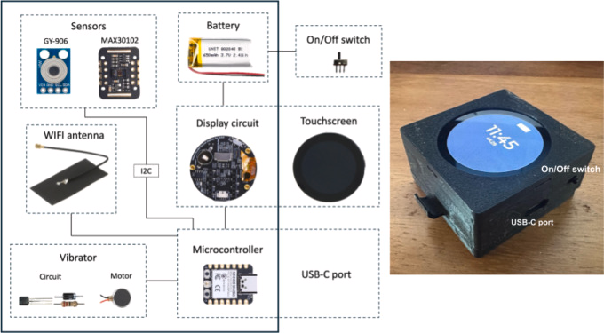
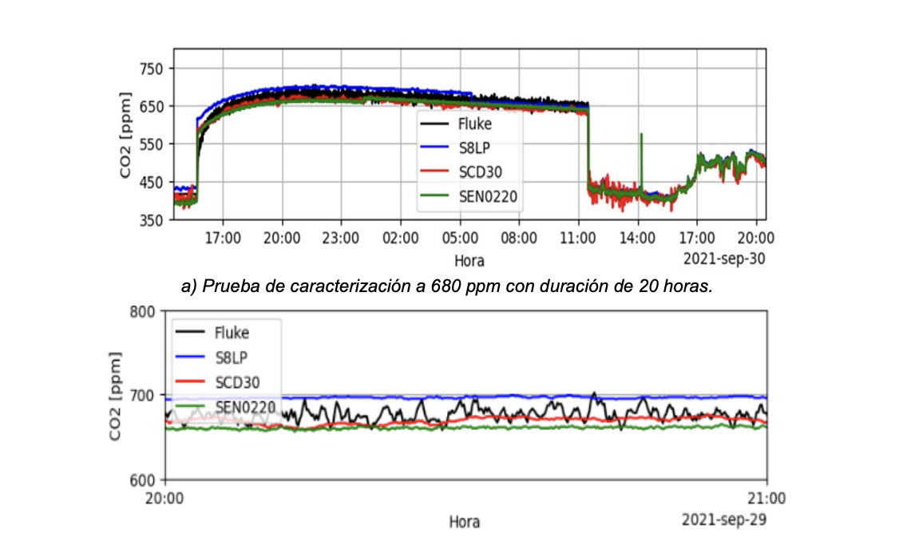
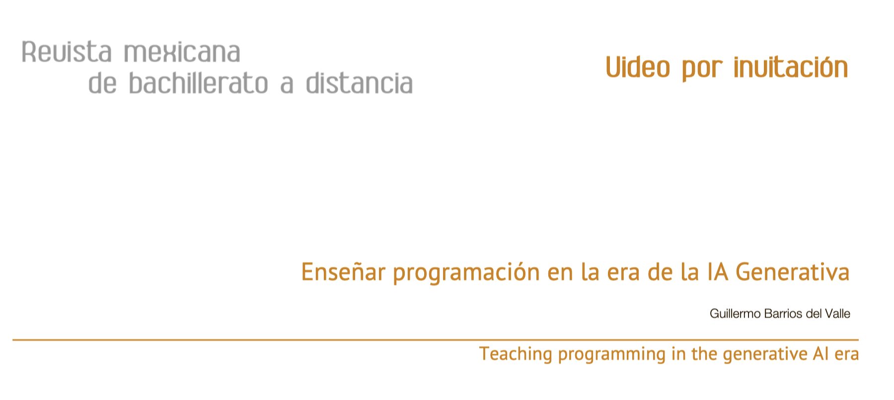
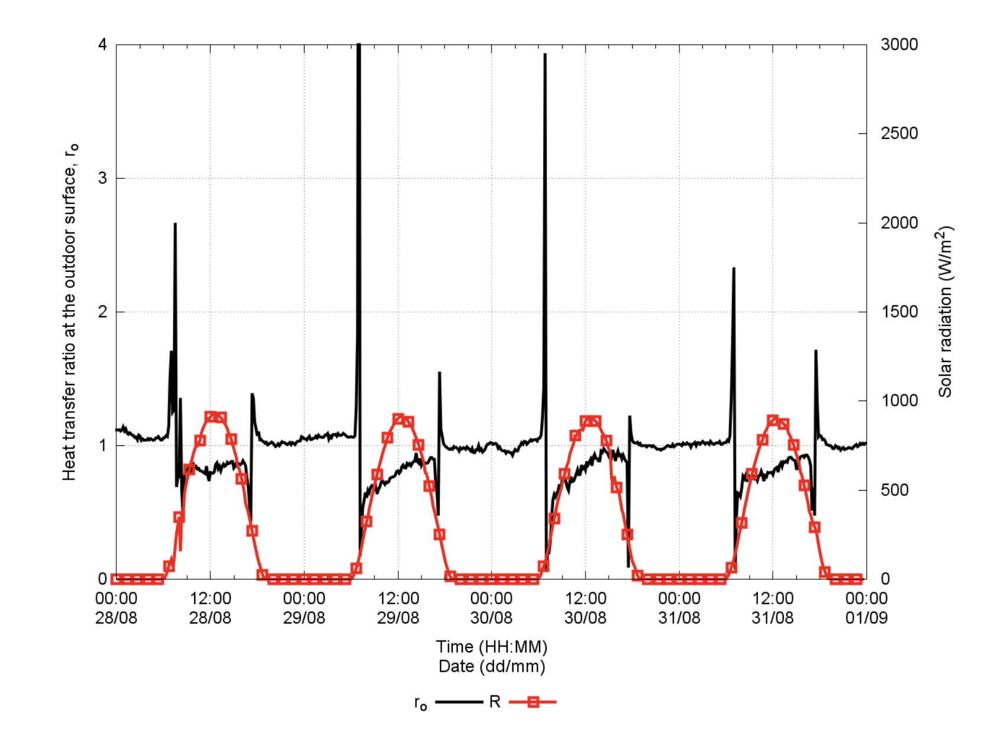
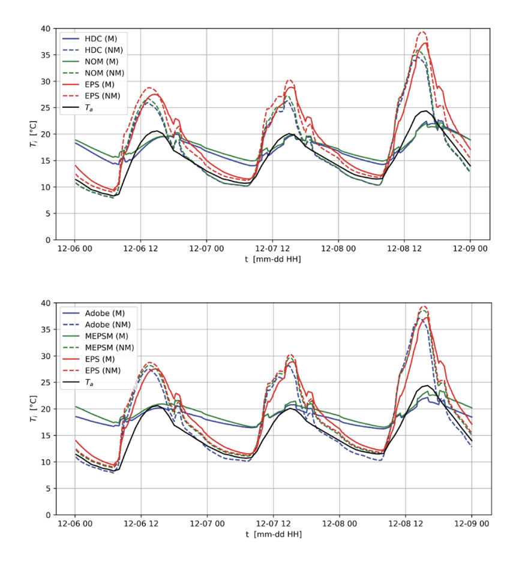
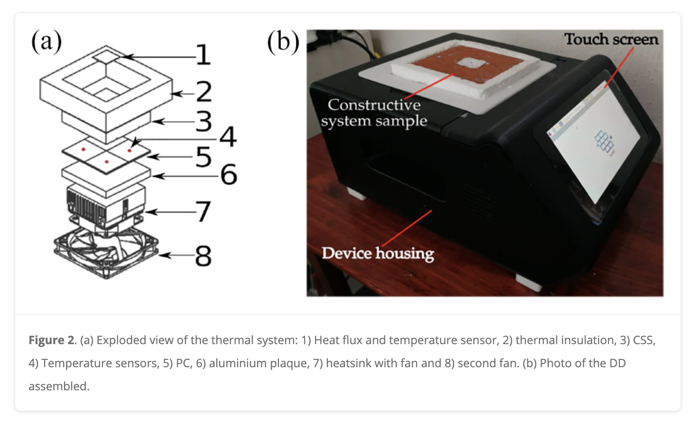
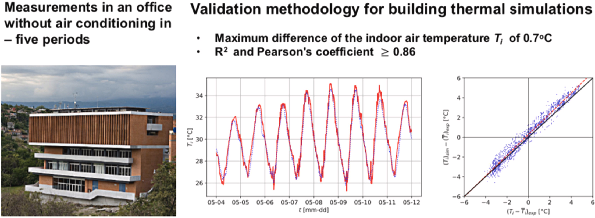
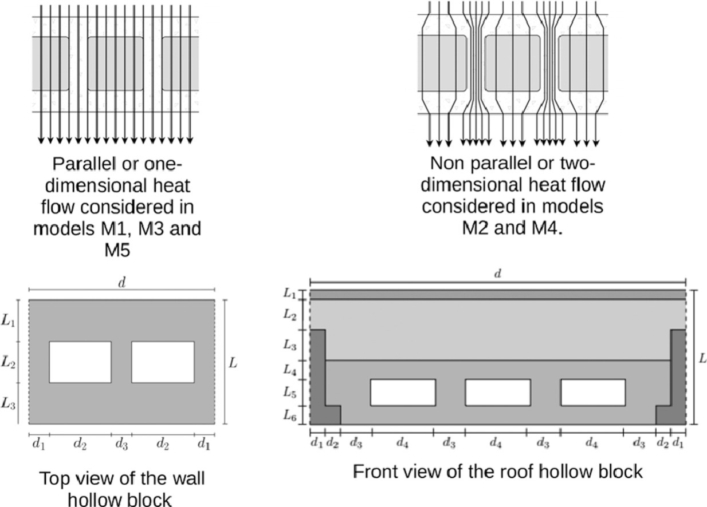
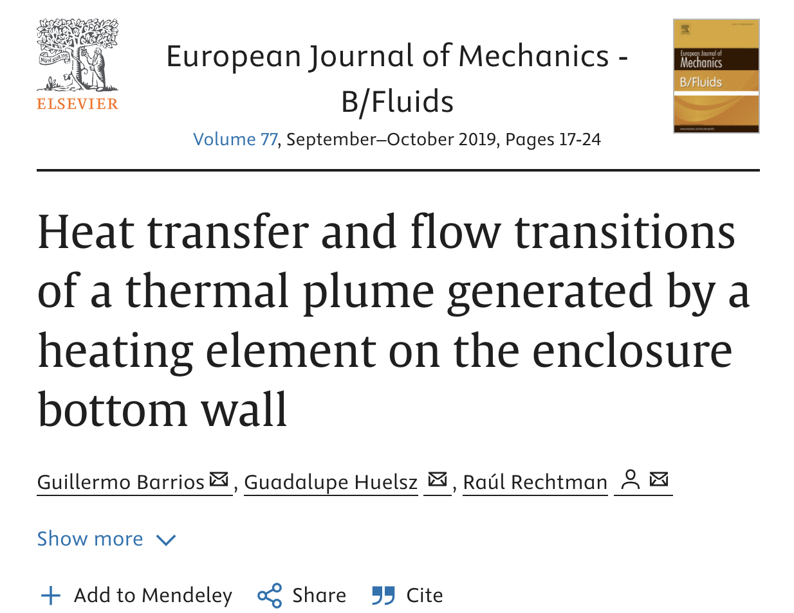

2025

HardwareX
IoT smartwatch based on open technologies for the collection of thermal comfort data
Landa, Julio, Barrios, Guillermo, Huelsz, Guadalupe
[URL]
BibTeX
@article{landa2025,
author = "Landa, Julio and Barrios, Guillermo and Huelsz, Guadalupe",
title = "IoT smartwatch based on open technologies for the collection of thermal comfort data",
journal = "HardwareX",
volume = "22",
pages = "e00633",
year = "2025",
issn = "2468-0672",
doi = "https://doi.org/10.1016/j.ohx.2025.e00633",
url = "https://www.sciencedirect.com/science/article/pii/S2468067225000112",
keywords = "Thermal comfort, IoT, Smartwatch, Physiological measurements, Open-source hardware",
abstract = "This paper presents an IoT smartwatch based on open technologies for thermal comfort data collection. The device performs simplified thermal comfort surveys every hour, collecting data such as clothing insulation level (clo), metabolic activity (met), location, thermal sensation, and thermal acceptance. In addition, it measures two physiological variables: skin temperature and heart rate. The smartwatch is built with low-cost components, including a XIAO ESP32C3 microcontroller, a GY-906 temperature sensor, a MAX30102 heart rate sensor, and Seeed Studio’s XIAO Round Display touchscreen. All collected data are published in real time on an IoT platform that allows remote access to all information. During device registration, the user is prompted to complete a Google Form, where additional data such as gender, age, height, weight, and frequency of air conditioner use are collected. This information, in combination with data from the smartwatch, contributes to a robust database. The ease of use, the design of the device, and its open-source nature make it ideal for the collection of thermal comfort data and its potential use for the generation of adaptative thermal comfort models."
}

Pistas Educativas
Diseño, construcción y caracterización de un monitor de CO₂ para la calidad del aire de interiores y ventilación, compatible con tres sensores, con integración IoT, autoprueba y autodiagnóstico
Zúñiga, Guillermo Ramírez, del Valle, Guillermo Barrios, Lesbros, Guadalupe Huelsz, González, Héctor Daniel Cortés
[URL]
BibTeX
@article{ramirez2025,
author = "Zúñiga, Guillermo Ramírez and del Valle, Guillermo Barrios and Lesbros, Guadalupe Huelsz and González, Héctor Daniel Cortés",
title = "Diseño, construcción y caracterización de un monitor de CO₂ para la calidad del aire de interiores y ventilación, compatible con tres sensores, con integración IoT, autoprueba y autodiagnóstico",
journal = "Pistas Educativas",
year = "2025",
volume = "46",
number = "149",
issn = "2448-847X",
month = "January",
note = "Número enero–junio; recepción: 26/nov/2024; aceptación: 24/abr/2025",
url = "https://pistaseducativas.celaya.tecnm.mx",
language = "es"
}

Revista Mexicana de Bachillerato a Distancia
Enseñar programación en la era de la IA Generativa
Barrios del Valle, Guillermo
[URL]
BibTeX
@article{barrios2025,
author = "Barrios del Valle, Guillermo",
title = "Enseñar programación en la era de la IA Generativa",
journal = "Revista Mexicana de Bachillerato a Distancia",
year = "2025",
volume = "17",
number = "34",
month = "September",
doi = "10.22201/cuaed.20074751e.2025.34.92845",
url = "https://revistas.unam.mx/index.php/rmbd/article/view/92845",
note = "Video complementario: https://youtu.be/q1APceDAkxk",
language = "es"
}
2023

Vivienda y Comunidades Sustentables
Transferencia dinámica de calor en muros de block hueco en una vivienda con ventilación natural
Ochoa de la Torre, José Manuel, Marincic Lovriha, Irene, Huelsz Lesbros, Guadalupe, Barrios, Guillermo
[URL]
BibTeX
@article{Ochoa2023,
author = "Ochoa de la Torre, José Manuel and Marincic Lovriha, Irene and Huelsz Lesbros, Guadalupe and Barrios, Guillermo",
bibtex_show = "true",
title = "Transferencia dinámica de calor en muros de block hueco en una vivienda con ventilación natural",
url = "https://revistavivienda.cuaad.udg.mx/index.php/rv/article/view/241/559",
number = "14",
journal = "Vivienda y Comunidades Sustentables",
year = "2023",
month = "jul.",
pages = "109–122",
abbr = "Viv. y Com. Sus."
}
2022

Ingenieria Investigacion y Tecnologia,
Importance of taking into account the thermal mass in simulations for a non-air-conditioned house
Huelsz, Guadalupe, Alvarez, Gabriela, Rojas, Jorge, Barrios, Guillermo
[URL]
BibTeX
@article{huelsz2022,
author = "Huelsz, Guadalupe and Alvarez, Gabriela and Rojas, Jorge and Barrios, Guillermo",
bibtex_show = "true",
abbr = "Ing. Inv. y Tec.",
title = "Importance of taking into account the thermal mass in simulations for a non-air-conditioned house",
journal = "Ingenieria Investigacion y Tecnologia,",
volume = "23",
issue = "3",
pages = "1--15",
numpages = "15",
year = "2022",
publisher = "American Physical Society,",
doi = "10.22201/fi.25940732e.2022.23.3.024",
url = "https://www.revistaingenieria.unam.mx/numeros/2022/v23n3-08.pdf",
selected = "false"
}

Journal of Building Physics,
Didactic device for teaching the importance of the time-dependent model for heat transfer calculations in constructive systems of buildings
Ramírez-Zúñiga, Guillermo, Barrios, Guillermo, Huelsz, Guadalupe
[URL]
BibTeX
@article{ramirez2022,
author = "Ramírez-Zúñiga, Guillermo and Barrios, Guillermo and Huelsz, Guadalupe",
bibtex_show = "true",
abbr = "J. of Buil. Phys.",
title = "Didactic device for teaching the importance of the time-dependent model for heat transfer calculations in constructive systems of buildings",
journal = "Journal of Building Physics,",
volume = "46",
issue = "2",
numpages = "10",
year = "2022",
publisher = "American Physical Society,",
doi = "https://doi.org/10.1177/17442591221093057",
url = "https://doi.org/10.1177/1744259122109305",
selected = "true"
}
2021

Journal of Building Engineering,
Validation of thermal simulations of a non air conditioned office building in different seasonal, occupancy and ventilation conditions
Calixto, Ivette, Huelsz, Guadalupe, Barrios, Guillermo, Cruz Salas, Miriam
[URL]
BibTeX
@article{calixto2021,
author = "Calixto, Ivette and Huelsz, Guadalupe and Barrios, Guillermo and Cruz Salas, Miriam",
bibtex_show = "true",
abbr = "J. of Buil. Eng.",
title = "Validation of thermal simulations of a non air conditioned office building in different seasonal, occupancy and ventilation conditions",
journal = "Journal of Building Engineering,",
abstract = "In this work, a methodology for the validation of non air conditioned building thermal simulations is proposed. Having certainty in these simulations can give confidence to building designers on the possibility to avoid the use of mechanical air conditioned systems or to reduce the period of their use, thus increasing the building's energy efficiency. The main features of the proposed methodology that differentiate it from the previous ones are i) the separation of data inputs which values are known with uncertainty into those that have more influence on indoor air temperature and those with more impact on surface temperatures; ii) to carry out the calibration process in two stages having as comparison variables indoor air temperature in the first stage and adding surface temperatures in the second stage; and iii) to carry out the validation process in different seasonal, occupancy and ventilation conditions. The case study is an office building, simulations are performed in EnergyPlus employing the Airflow Network model for infiltration and ventilation. Quantitative comparisons are made using eight metrics. The results show the advantages of carrying out the second stage of validation proposed in this work. The validation results show that the building model obtained from the calibration process is suitable to simulate the building in different seasonal, occupancy and ventilation conditions, and can be used with certainty to test strategies to improve thermal comfort in the building. For the case study, two strategies are tested showing important reductions in thermal discomfort on occupancy hours during the critical hot season.",
volume = "44",
numpages = "10",
year = "2021",
publisher = "American Physical Society,",
doi = "10.1016/j.jobe.2021.102922",
url = "https://www.sciencedirect.com/science/article/abs/pii/S2352710221007804",
selected = "true"
}

Energy and Building,
Evaluation of heat transfer models for hollow blocks in whole-building energy simulations
Huelsz, Guadalupe, Barrios, Guillermo, Rojas, Jorge
[URL]
BibTeX
@article{huelsz2019,
author = "Huelsz, Guadalupe and Barrios, Guillermo and Rojas, Jorge",
bibtex_show = "true",
abbr = "Energy Build",
title = "Evaluation of heat transfer models for hollow blocks in whole-building energy simulations",
journal = "Energy and Building,",
volume = "202",
numpages = "10",
year = "2021",
publisher = "American Physical Society,",
doi = "10.1016/j.enbuild.2019.109338",
url = "https://doi.org/10.1016/j.enbuild.2019.109338",
selected = "true"
}
2019

European Journal of Mechanics - B/Fluids,
Heat transfer and flow transitions of a thermal plume generated by a heating element on the enclosure bottom wall
Barrios, Guillermo, Huelsz, Guadalupe, Rechtman, Ra\'ul
[URL]
BibTeX
@article{barrios2019,
author = "Barrios, Guillermo and Huelsz, Guadalupe and Rechtman, Ra\'ul",
bibtex_show = "true",
abbr = "Eur. J. Mech. B",
title = "Heat transfer and flow transitions of a thermal plume generated by a heating element on the enclosure bottom wall",
abstract = "The two-dimensional buoyancy induced flow above a heating horizontal element in the center of the bottom of a rectangular enclosure filled with air is numerically studied using the thermal lattice Boltzmann equation method with two distribution functions. The heating element has a higher temperature than that of the remaining walls. The width and height of the enclosure are 5 and 10 times the length of the heating element respectively. The flow is space and time symmetric if after a transient, the flow is symmetric with respect to the vertical axis of the enclosure and is time independent. A suitable quantity, here called the asymmetry, is zero when the flow is time and space symmetric, positive and constant when the first symmetry is lost, and positive and time dependent when both symmetries are broken. Flow transitions are studied as the Rayleigh number, changes in a large interval. Eight flow transitions were found, the first ones related to the space and time symmetries. When both symmetries are broken, additional flow transitions were found by studying the Fourier power spectrum of the asymmetry, which allows the identification of the fundamental frequency and the appearance of harmonics and other frequencies. The average Nusselt number as a function of is also studied and a transition in their relationship is found at the appearance of harmonics, giving way to two different correlations.",
journal = "European Journal of Mechanics - B/Fluids,",
volume = "77",
numpages = "7",
year = "2019",
publisher = "American Physical Society,",
doi = "10.1016/j.euromechflu.2019.01.007",
url = "https://doi.org/10.1016/j.euromechflu.2019.01.007",
selected = "false"
}